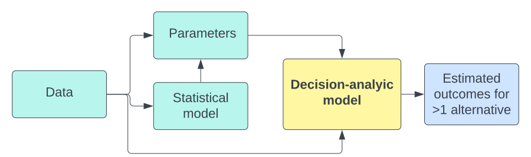

Course introduction
EPIB 676 session 1, McGill University
1/4/23
About me
- Born in North Carolina
- Engineering at NC State (BSc) and Stanford (MSc, PhD)
- Joined the School of Population and Global Health in January 2022
- Teach PPHS 528 Economic evaluation of health programs in the fall
- Decision Modeling Lab
Agenda for today
- Why decision analysis
- Course overview
- Using R for decision analysis
- Perspective and audiences
Why decision analysis?
- Demand for health resources nearly infinite
- Resources (budgets) are limited
- Choices must be made!
Opportunity cost
The value of the next-best thing I could have done with the resources
Each dollar spent on PrEP to prevent HIV in people who inject drugs cannot be spent on photon radiation for children with cancer, etc.
Each dollar spent on health care cannot be spent on education, infrastructure, defense, etc.
Challenges in global health
Challenges in global health
- High childhood mortality
- Epidemics of infectious diseases
- Poor health infrastructure
- Limited access to care
- Limited funds for disease prevention and treatment
Challenges in Canada
- Aging boomers
- 50% of health care expenses incurred in last year of life
- Chronic health conditions
- Insufficient capacity → long queues for services
- Joint replacements, colonoscopy, emergency rooms, etc.
How do we decide what to pay for?
Decision criteria
How do we decide what to pay for?
Decision criteria
- Cost
- Effectiveness
- Efficiency
- Fairness
Key questions for decision analysis
- What services should we pay for?
- Who should receive these services?
- How can these services be delivered most efficiently?
Key questions for decision analysis
Health policy
- What services should we pay for?
- Who should receive these services?
Healthcare operations
- How can these services be delivered most efficiently?
Developing a decision analysis
Define the decision context
Identify outcomes of interest (cost, effects, efficiency, fairness)
Identify alternatives
Estimate outcomes under each alternative
Perform sensitivity analysis
Consider non-quantifiable factors
Interpret the results
Developing a decision analysis
Define the decision context
Identify outcomes of interest (cost, effects, efficiency, fairness)
Identify alternatives
Estimate outcomes under each alternative → Modeling
Perform sensitivity analysis → Modeling
Consider non-quantifiable factors
Interpret the results
Decision-analytic model
- Function mapping inputs (data, parameters) into estimated outcomes for two or more alternatives
- Propagate uncertainty
- Uncertain inputs → uncertain outputs

Decision analysis can…
- Estimate monetary and nonmonetary consequences of alternatives
- Suport decisions about investment into/design of programs
- Inform allocation of resources
- Provide insights with incomplete data (requires assumptions)
- Inform data collection/research
Decision analysis can’t…
- Perfectly capture reality
- Account for unknown factors
- Replace a decision maker
Agenda for today
- Why decision analysis
- Course overview
- Using R for decision analysis
- Perspective and audiences
Learning objectives
- Develop decision analytic models to inform health policy and clinical decisions
- Understand and critically appraise published model-based decision analyses
- Create transparent reports of decision analyses that conform to open science principles
EPIB 676 vs PPHS 528
Economic evaluations often use decision analytic models
- Exception: trial-based cost-effectiveness analysis
Decision analyses often used for economic evaluation
- Exception: decision models without costs
PPHS 528: economic evaluation, ~15% modeling methods
EPIB 676: modeling method, ~15% economic evaluation
PPHS 528 is less research oriented and requires less background in programming, probability, and math
Agenda for today
- Why decision analysis
- Course overview
- Using R for decision analysis
- Perspective and audiences
Software for decision-analytic modeling
- Software programs
- Programming languages
Python, Julia, Matlab, C++, etc.
R
Why I like R
- Free and open source, designed for data science
- Code-based (easier to interrogate + version control)
- Ecosystem of packages, tutorials, vignettes (others not as mature)
- Friendly community of useRs
- Systems for creating reproducible research reports
Packages for decision-analytic modeling in R
Downsides of R
- High learning curve for non-programmers (vs. Excel, TreeAge)
- Not the fastest language
- Julia, C++, Matlab faster
- But, RCPP package can integrate R with C++
- Dependencies and back/forward compatibility
- Packages can have errors, not be maintained
- Functionality changes after updates
Getting started with R
We will:
- Create a new R project with quarto document
- Download and render assignment 0
- [Optional] clone the class R project onto your computer
Agenda for today
- Why decision analysis
- Course overview
- Using R for decision analysis
- Perspective and audiences
Who is the audience?
- Public health
- Regulators
- Clinicians / Medical societies
- Patients
- Patient parent/guardian
- Insurance companies
- Organization leaders (admin of hospital, blood collectors)
- Funding agencies (e.g., CIHR)
- etc.
Depends on context; often multiple target audiences
Perspective motivated by audience
The case for societal perspective
First Panel on Cost-Effectiveness in Health and Medicine (1996):
Using CEA to inform allocation of health resources accepts the existence of a limit on health spending; when the societal perspective is adopted, the analysis acknowledges the value of competing uses for society’s resources
But, data on non-health benefits/costs are often lacking
Why choose just one?
- 1 analysis can have >1 perspective
- Typical: societal + healthcare payer
Reporting disaggregated outcomes (e.g., costs by category) can allow reader to re-calculate according to their perspective.
Recap
Decision analysis can inform efficient and effective use of finite health resources
Applications in health policy & operations
R enables open source, reproducible workflows
Perspective and framing depends on target audience
Logistics
- Assignment 0 due next Wednesday 1/11
- Complete reading before Friday’s class